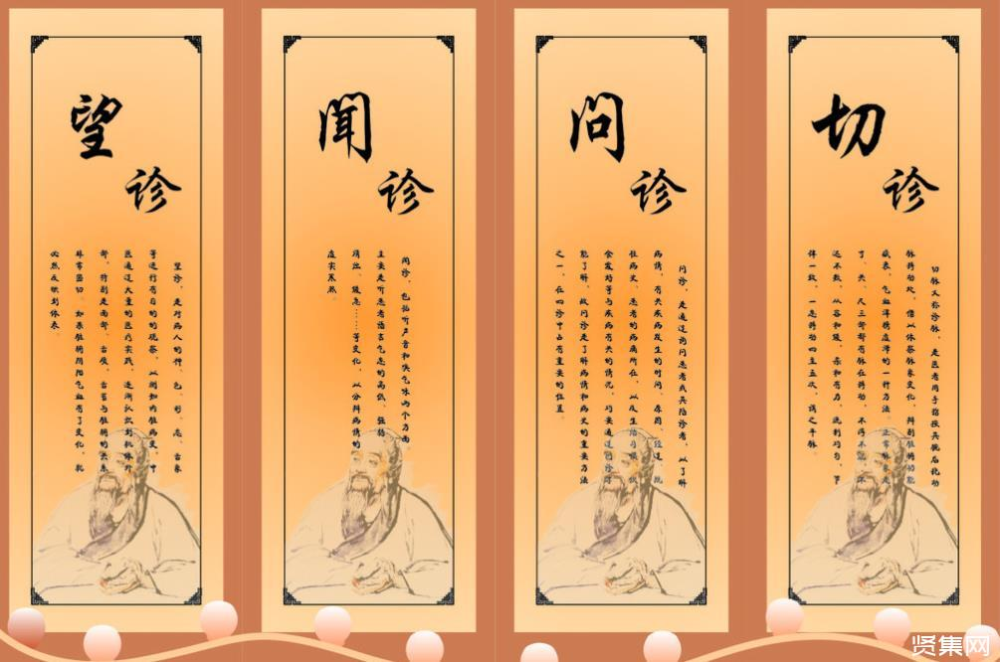

治疗手段
中药
按治疗作用分为：补虚药、解表药、清热药、温里药、理气药、消食药、收涩药、祛风湿药、芳香化湿药、利水渗湿药、化痰止咳平喘药、安神药、平肝息风药、活血祛淤药、止血药、泻下药、驱虫药、芳香开窍药。
针灸
针灸按人体十四体表经脉循行常用穴位针灸，根据病情的不同和穴位的不同而选取不同的进针手法和深度及角度。十四经脉为：任脉、督脉、手太阴肺经、手少阴心经、手厥阴心包经、手阳明大肠经、手太阳小肠经、手少阳三焦经、足阳明胃经、足太阳膀胱经、足少阳胆经、足太阴脾经、足少阴肾经、足厥阴肝经。
拔火罐
拔火罐疗法是用罐状器，借火热的作用，使罐中产生负压，吸附在皮肤的穴位上，造成局部充血、瘀血来治疗疾病的一种方法。
四诊
一、望诊
观察病人形体、面色、舌体、舌苔，根据形色变化确定病位、病性，称为望诊。形体观其形体，可知五脏盛衰，轩岐早有论述。《素问·脉要精微论》云：“头者，精明之府，头倾视深，精神将夺矣！背者，胸中之府，背曲肩随，府将坏矣！腰者，肾之府，转摇不能，肾将惫矣！膝者，筋之府，屈伸不能，行则按俯，筋将惫矣！骨者，髓之府，不能久立，行则振掉，骨将惫矣！”脑为元神之府，肾精生化之髓充实其中，才能神光焕发，思维敏捷。苦头往前倾，目睛内陷，是髓海不足，元神将惫现象。背为胸廓，心肺居于胸中，背曲肩随，是心肺已虚象征。腰为肾脏所在部位，不能转摇，是肾脏功能衰惫的表现。
二、闻诊
闻诊包括听声音和嗅气味两方面：1、从病人发生的各种声音，从其高低、缓急、强弱、清浊测知病性的方法。①声音高亢：是正气未虚，属于热证、实证。②语声重浊：乃外感风寒，肺气不宣，肺津不布，气郁津凝，湿阻肺系会厌，声带变厚，以致声音重浊。2、嗅气味可分为病人身体的气味和病室内的气味。①病人说话有囗臭，多属消化不良、腐臭多属体内有溃疡。②病室内有尸臭气味，多属腑脏败坏。有烂苹果气味，多属消渴病（糖尿病）危重患者。
三、问诊
问诊是询问病人及其家属，了解现有证象及其病史，为辨证提供依据的一种方法。明代医家张景岳认为问诊“乃诊治之要领，临证之首务”。综观四诊所获证象，大半均由问诊得来，即知此言不谬。问诊范围甚广，我们仅将《景岳全书》所列十问加以增损进行研讨，余未备述。一问寒热二问汗，三问疼痛四问便，五问呕眩六问悸，七苦八渴俱当辨，九问旧病十问团，病机全从证象验。妇人尤必问经期，先后闭崩宜问遍，再添片语告儿科，外感食积为常见。
四、切诊
切诊是指用手触按病人身体，借此了解病情的一种方法。本节仅论切脉，余未备述。切脉又称诊脉，是医者用手指按其腕后挠动脉搏动处，借以体察脉象变化，辨别脏腑功能盛衰，气血津精虚滞的一种方法。正常脉象是寸、关、尺三部都有脉在搏动，不浮不沉，不迟不数，从容和缓，柔和有力，流利均匀，节律一致，一息搏动四至五次，谓之平脉。切脉辨证，早在《内经》、《难经》就有记载，经历三千年来的不断总结，对于何证出现何脉已有详细论述。但对证象与脉象间的内在联系，却无明析的概念，不能令人一目了然，以致学者只知其然而不知其所以然。脉证间的内在联系，如用一句话来概括，就是气血津液出现虚滞，五脏功能出现盛衰，才会出现不同脉证。只有弄清气血津液的生化输泄与五脏间的关系，才能将气血津液虚滞和五脏功能盛衰出现的证象与脉象联系起来，也才明白切脉能够察其五脏病变的道理所在。不同脉象的形成，与心脏、脉络、气血津液有着密不可分的关系。脉象的不同变化反映了心力强弱、脉络弛张、气血津液虚滞三个方面的变化。由于气血津液都需五脏协同合作才能完成其生化输泄，所以气血津液的虚滞也就反映了五脏功能的盛衰，从而反映于脉，形成不同的脉象。心脏搏动的强弱，脉络的弛张，是引起脉象变化的根源。心脏搏动有力，脉象随其病因证象不同而呈洪大滑数等脉；无力则脉象常呈迟细微弱等脉。心脏搏动与脉象起伏，都是肝系膜络交替收缩与舒张的反映。如果血络松弛则呈濡、缓；紧张则呈弦紧；痉挛则呈结代等等。只有将固定的心脏、脉络和流动的气、血、津液连在一起分析，才能揭示脉象变化的本质，对于何证出现何脉才有理有据，不是无源之水，无本之木。气血津液虚滞变化，可以反映不同的脉象。